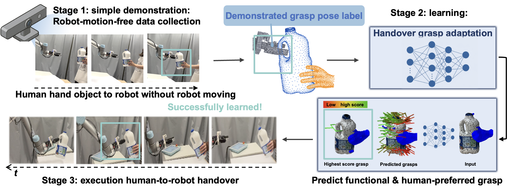
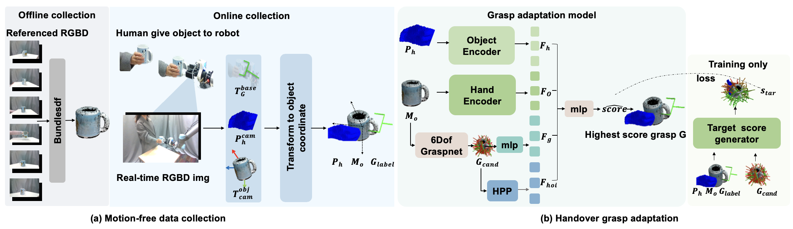
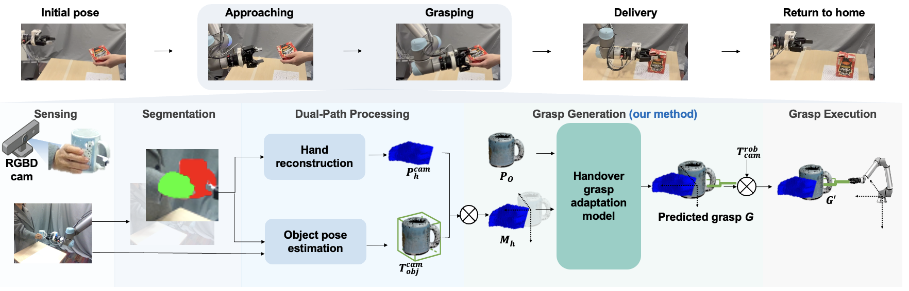
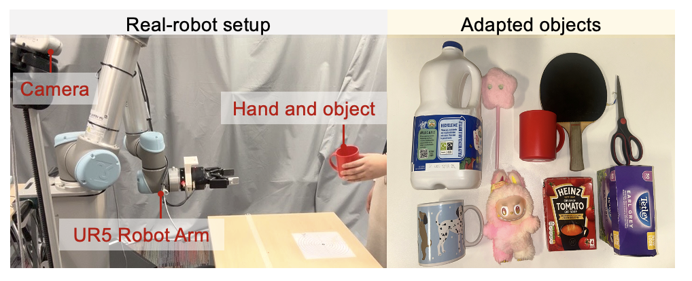
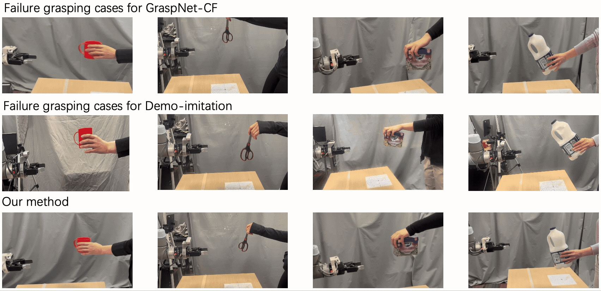
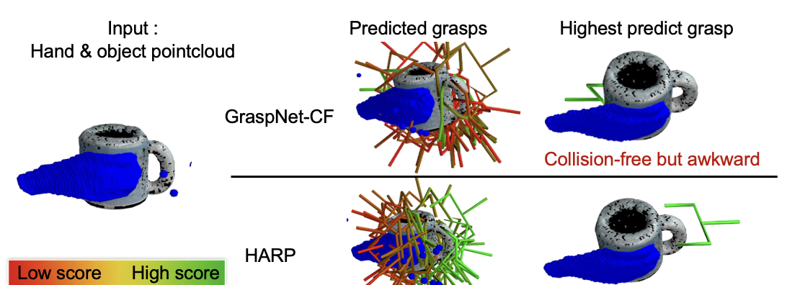

Abstract
Existing human-to-robot (H2R) handover approaches extend object-centric grasping through various strategies to ensure human safety. However, they often neglect the influence of the giver’s object presentation on grasp-region suitability, potentially resulting in unsuccessful or unstable robot grasps. Addressing this problem through H2R handover data collection in the real world is costly, time-consuming, and potentially unsafe to humans. To address these challenges, we present a method that collects human-demonstrated grasps for H2R handovers by instructing humans to naturally hand objects to a stationary robot gripper and adapt a grasp generation method to produce grasps aligned with human handover demonstrations. Our data collection method enables rapid and safe collection of H2R handover demonstrations. Building on the collected demonstrations, we present a lightweight per-object grasp adaptation model that jointly models the human hand and object to generate grasps from just two minutes of training per object. Our method can be integrated into existing H2R handover frameworks, requiring only the hand pointcloud and the textured object mesh as input. Experiments demonstrate improved grasp success, strong alignment with human demonstrations, higher human perceptual scores for grasping naturalness and safety, and effective adaptation on objects with challenging geometries in real-world H2R handovers.

Video Summary
HARP Pipeline
Overview of our motion-free data collection and handover grasp generation. (a) In the offline stage, reference RGB-D images are used to reconstruct a textured object mesh via BundleSDF. In the online stage, a human naturally hands the object to a stationary robot while a fixed side-mounted RGB-D camera captures the process. Note that the robot arm remains stationary. Hand and object masks are extracted, the hand pointcloud is reconstructed, and the object pose is estimated using FoundationPose. The gripper pose and hand pointcloud are then transformed into the object coordinate frame. Finally, we obtain the demonstrated grasp pose label and corresponding hand pointcloud in real-time. (b) We then present a grasp adaptation model that encodes the hand pointcloud \(P_h\) and object mesh \(M_o\) using PointNet and a mlp layer. The grasp candidates are generated by 6-DoF GraspNet and encodes by a mlp layer. A Hand Proximity Prior (HPP) models the spatial relationship between the hand and each grasp candidate. All features are then fused to predict a score for each grasp candidate, and the highest-scoring grasp is selected for the handover task.

Human-to-robot handover pipeline integrated with HARP.
A fixed RGB-D camera captures the approaching scene, and we extract hand–object masks. The object pose \(T_{obj}^{cam}\) is estimated using FoundationPose and the hand pointcloud \(P_{h}^{o}\) is reconstructed from the depth image and transformed to the object coordinate. HARP use the hand pointcloud and pre-prepared object mesh to predict the grasp pose \(G\). The grasp pose \(G\) is transformed to robot base coordinate with object pose \(T_{obj}^{cam}\) and camera extrinsics \(T_{cam}^{rob}\). The robot use the grasp pose \(G^{'}\) and moves to a pre-grasp pose and performs closed-loop grasping before delivering the object to a predefined location.

Robot Setup
For real-robot experiments, we use a UR5 robotic arm with Robotiq 2F-85 2-finger gripper and a side-mounted Intel Realsense D435i camera, and a participant holding a object (left). To evaluate the model's performance, we use 9 adapted objects including objects with strong functional grasp affordances, objects difficult to grasp, and more common objects in real-robot handover experiments (right).

Comparison with Baseline (Playback at 2× Speed)
We compare HARP against a widely used grasping method for human-to-robot handover, referred to as GraspNet-CF, which combines a 6-DoF object-centric grasping network with a collision-free filtering strategy. The evaluation is conducted under the same handover pipeline, where only the grasp adaptation module is replaced.


Click image to switch comparison